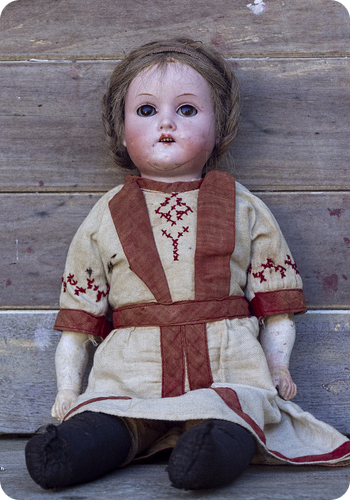
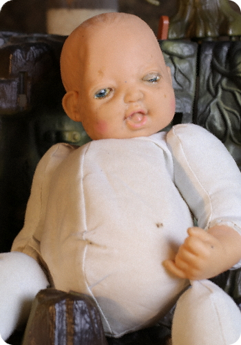

Stillbirth at 25 weeks gestation.
Puts those who sleep under watch of gift at ease.
Clinical miscarriage in second trimester.
Wards off poor weather conditions for more sunny days ahead.


Spontaneous abortion at 16 weeks.
Removes gift owner's desire for addictive substances.
Preterm delivery at 34 weeks.
Bestows added wealth and prosperity to those who create a home for this gift.